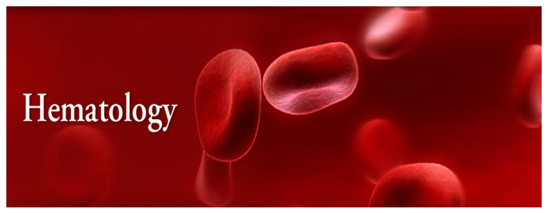

Hematology is the medical field that studies blood, blood-forming organs, and blood diseases.
It involves diagnosing and treating conditions like anemia, leukemia, clotting disorders, lymphomas, and other blood related disorders.
Hematologists use various tests to understand blood-related health issues and manage treatments accordingly.
